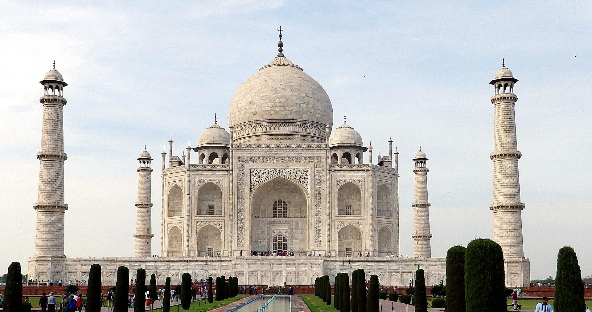

TAJ MAHAL
Le Taj Mahal (en devanagari ताजमहल, en persan تاج محل qui signifie « la couronne du palais » — mais ce nom peut aussi être vu comme une corruption de Mumtaz Mahal1) est situé à Agra, au bord de la rivière Yamuna, dans l'État de l'Uttar Pradesh, en Inde2. C'est un mausolée de marbre blanc construit par l'empereur moghol musulman Shâh Jahân en mémoire de son épouse Arjumand Bânu Begam3, aussi connue sous le nom de Mumtaz Mahal, qui signifie en persan « lumière du palais ». Celle-ci meurt le 17 juin 1631 en donnant naissance à leur quatorzième enfant, alors qu'elle accompagnait son mari pendant une campagne militaire. Elle trouve une première sépulture sur place dans le jardin Zainabad à Burhanpur. La construction du mausolée commence en 1631 et s'achève dans sa plus grande partie en 16484. Son époux, mort le 31 janvier 1666, est inhumé auprès d'elle. Le Taj Mahal est considéré comme un joyau de l'architecture moghole, un style qui combine des éléments architecturaux des architectures islamique, iranienne, ottomane et indienne5,6. Il est considéré que l'architecte principal fut Ustad Ahmad Lahauri7,8 de Lahore
